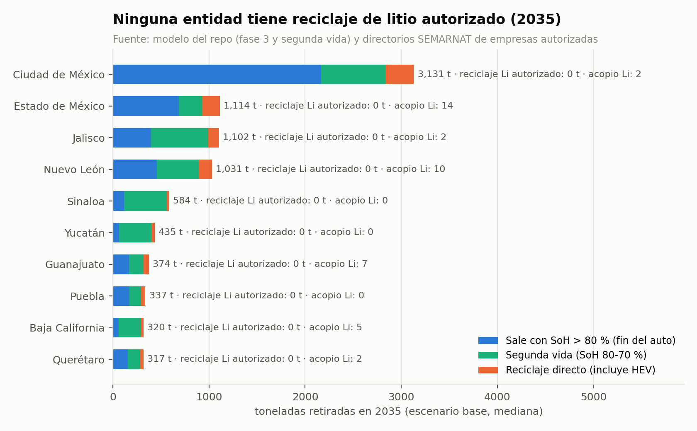

Las cifras se leen de api-estatica/resumen.json cuando la página está en un servidor; si la abres como archivo local se muestran los valores incluidos. Escenario base, mediana.
El problema
Problemática. En México nadie puede decir cuántas baterías de VE e híbridos salen de los vehículos, en qué estado de salud y adónde van. No hay registro público de su salud ni de su destino, el ion-litio está en una zona gris legal y la infraestructura de reciclaje se hizo para plomo-ácido.
Pregunta guía. ¿Cuántas baterías llegarán al final de su vida en cada estado entre 2026 y 2035, en qué condición, y existe capacidad autorizada para reutilizarlas o reciclarlas?
| Hipótesis | Resultado |
|---|---|
| Las bajas se concentran en pocas entidades | Confirmada. CDMX 3,131 t, Estado de México 1,114 t, Jalisco 1,102 t y Nuevo León 1,031 t en 2035: 56% del total |
| En estados calurosos la batería dura menos | Confirmada en el modelo. BEV: 9.7 años en estados ≥ 24 °C frente a 15.8 en el resto |
| La capacidad de reciclaje autorizada es menor que las bajas | Confirmada y más grave de lo previsto. 0 t/año autorizadas para litio en las 32 entidades |
Causa raíz: falta de trazabilidad de la batería desde la venta hasta el desecho.
Adónde van las 11,356 t de 2035
| Destino | Toneladas |
|---|---|
| Salen con SoH > 80% porque el auto terminó su vida | 5,305 t |
| Segunda vida (SoH 80–70%) | 4,711 t |
| Reciclaje directo (híbridos) | 1,340 t |
La segunda vida no elimina el reciclaje, lo pospone 3–7 años: con adopción total, el reciclaje necesario en 2035 bajaría de 11,356 t a 3,232 t. Aun así, hoy no hay dónde reciclar litio en el país.
Gráficas



Propuesta de gestión
- Responsabilidad extendida del productor para baterías de tracción mediante un acuerdo de la Ley General de Economía Circular (2026), con recolección financiada por armadoras e importadores.
- Pasaporte de batería mexicano vinculado al NIV: química, kWh, SoH al retiro y destino (referente: Reglamento UE 2023/1542, art. 77).
- Incluir el ion-litio en el art. 31 de la LGPGIR o en una NOM específica, para cerrar la zona gris.
- Capacidad de reciclaje de litio priorizada en CDMX, Estado de México, Jalisco y Nuevo León.
- Segunda vida regulada entre 80% y 70% de SoH, para ganar tiempo mientras se construyen plantas.
- Plan para estados calurosos (Sinaloa, Yucatán), donde las baterías se retiran antes.
Plan de trabajo (DMAIC)
| Etapa | Qué se hizo | Estado |
|---|---|---|
| Definir | Problemática, alcance nacional, periodo 2016–2025 | Hecho |
| Medir | 10 fuentes públicas, ETL con SHA-256, fichas y tabla de faltantes | Hecho |
| Analizar | Causa raíz, vida útil (Weibull, Arrhenius), ventas, flujo de bajas, SoH, riesgo | Hecho |
| Mejorar | Segunda vida, reciclaje retrasado, brecha SEMARNAT, marco legal, propuesta | Hecho |
| Controlar | Repositorio, extenso técnico, esta página y la API estática | Hecho |
Endpoints de la API estática
Son archivos JSON de solo lectura (sin servidor). Se consultan con una petición GET normal desde cualquier página o programa.
| Endpoint | Contenido |
|---|---|
api-estatica/resumen.json | Cifras clave: bajas 2035, Línea 2 (segunda vida, reciclaje de litio, concentración), ventas, CO₂ por km |
api-estatica/retiros.json | Baterías que salen de vehículos, 2016–2040 (unidades, MWh, toneladas; P5/P50/P95; escenarios bajo/base/alto) |
api-estatica/ventas.json | Proyección de ventas BEV/PHEV/HEV por escenario |
api-estatica/vida-flota.json | Weibull de flota y vida de batería por estado |
api-estatica/weibull.json | Weibull de laboratorio con censura (CALCE, NASA, Oxford) |
api-estatica/co2.json | CO₂ de ciclo de vida, Monte Carlo (n = 20,000) |
api-estatica/escenarios-red.json | Cuatro escenarios de red eléctrica |
api-estatica/sobol.json | Índices de sensibilidad de Sobol |
api-estatica/ndvi.json | Tendencias de vegetación en zonas mineras |
api-estatica/retiros-por-clima.json | Toneladas 2035 por estado frente a su clima |
api-estatica/segunda-vida.json | Destino de las bajas (reúso, segunda vida, reciclaje) por año y tipo |
api-estatica/segunda-vida-entidad.json | Destino de las bajas por estado (2030, 2035, 2040) |
api-estatica/reciclaje-retrasado.json | Toneladas que llegan a reciclaje según la adopción de segunda vida |
api-estatica/brecha-reciclaje.json | Bajas por estado frente a la capacidad autorizada de SEMARNAT |
api-estatica/litio-autorizaciones.json | Autorizaciones de SEMARNAT que mencionan baterías de litio |
api-estatica/sensibilidad-umbral-70.json | Toneladas retiradas con retiro al 80% y al 70% de SoH |
Consumir los datos desde otra página
const base = "https://raw.githack.com/joelmoralesgutierrez8-lab/bateria-ve-mx/main/";
const r = await fetch(base + "api-estatica/resumen.json");
const datos = await r.json();
console.log(datos.linea2_2035.toneladas_retiradas); // 11356.2Incrustar esta página en otra (iframe)
<iframe src="https://raw.githack.com/joelmoralesgutierrez8-lab/bateria-ve-mx/main/index.html"
width="100%" height="720" style="border:0" loading="lazy"
title="Baterías de VE en México"></iframe>Para incrustar solo el extenso técnico, cambia index.html por docs/extenso_bateria_ve_mx.html.
Los resultados son escenarios con bandas de incertidumbre, no pronósticos puntuales. Supuestos, fuentes y límites: ver el extenso técnico.